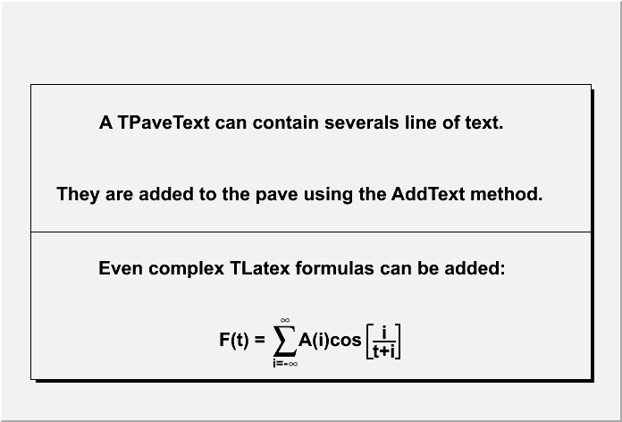
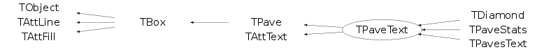

class TPaveText: public TPave, public TAttText
TPaveText : to draw a pave with text
Example:
{kind=link}

//Draw a pave text //Author: Olivier Couet { TCanvas *c = new TCanvas("c"); TPaveText *pt = new TPaveText(.05,.1,.95,.8); pt->AddText("A TPaveText can contain severals line of text."); pt->AddText("They are added to the pave using the AddText method."); pt->AddLine(.0,.5,1.,.5); pt->AddText("Even complex TLatex formulas can be added:"); pt->AddText("F(t) = #sum_{i=-#infty}^{#infty}A(i)cos#[]{#frac{i}{t+i}}"); pt->Draw(); return c; }
Function Members (Methods)
public:
| TPaveText() | |
| TPaveText(const TPaveText& pavetext) | |
| TPaveText(Double_t x1, Double_t y1, Double_t x2, Double_t y2, Option_t* option = "br") | |
| virtual | ~TPaveText() |
| void | TObject::AbstractMethod(const char* method) const |
| virtual TBox* | AddBox(Double_t x1, Double_t y1, Double_t x2, Double_t y2) |
| virtual TLine* | AddLine(Double_t x1 = 0, Double_t y1 = 0, Double_t x2 = 0, Double_t y2 = 0) |
| virtual TText* | AddText(const char* label) |
| virtual TText* | AddText(Double_t x1, Double_t y1, const char* label) |
| virtual void | TObject::AppendPad(Option_t* option = "") |
| virtual void | TObject::Browse(TBrowser* b) |
| static TClass* | Class() |
| virtual const char* | TObject::ClassName() const |
| virtual void | Clear(Option_t* option = "")MENU |
| virtual TObject* | TObject::Clone(const char* newname = "") const |
| virtual Int_t | TObject::Compare(const TObject* obj) const |
| virtual void | TPave::ConvertNDCtoPad() |
| virtual void | TPave::Copy(TObject& pave) const |
| virtual void | TObject::Delete(Option_t* option = "")MENU |
| virtual void | DeleteText()MENU |
| Int_t | TAttLine::DistancetoLine(Int_t px, Int_t py, Double_t xp1, Double_t yp1, Double_t xp2, Double_t yp2) |
| virtual Int_t | TPave::DistancetoPrimitive(Int_t px, Int_t py) |
| virtual void | Draw(Option_t* option = "") |
| virtual TBox* | TBox::DrawBox(Double_t x1, Double_t y1, Double_t x2, Double_t y2) |
| virtual void | TObject::DrawClass() constMENU |
| virtual TObject* | TObject::DrawClone(Option_t* option = "") constMENU |
| virtual void | DrawFile(const char* filename, Option_t* option = "") |
| virtual void | TPave::DrawPave(Double_t x1, Double_t y1, Double_t x2, Double_t y2, Int_t bordersize = 4, Option_t* option = "br") |
| virtual void | TObject::Dump() constMENU |
| virtual void | EditText()MENU |
| virtual void | TObject::Error(const char* method, const char* msgfmt) const |
| virtual void | TObject::Execute(const char* method, const char* params, Int_t* error = 0) |
| virtual void | TObject::Execute(TMethod* method, TObjArray* params, Int_t* error = 0) |
| virtual void | TPave::ExecuteEvent(Int_t event, Int_t px, Int_t py) |
| virtual void | TObject::Fatal(const char* method, const char* msgfmt) const |
| virtual TObject* | TObject::FindObject(const char* name) const |
| virtual TObject* | TObject::FindObject(const TObject* obj) const |
| Int_t | TPave::GetBorderSize() const |
| Double_t | TPave::GetCornerRadius() const |
| virtual Option_t* | TObject::GetDrawOption() const |
| static Long_t | TObject::GetDtorOnly() |
| virtual Color_t | TAttFill::GetFillColor() const |
| virtual Style_t | TAttFill::GetFillStyle() const |
| virtual const char* | TObject::GetIconName() const |
| const char* | GetLabel() const |
| virtual TText* | GetLine(Int_t number) const |
| virtual Color_t | TAttLine::GetLineColor() const |
| virtual Style_t | TAttLine::GetLineStyle() const |
| virtual Width_t | TAttLine::GetLineWidth() const |
| virtual TText* | GetLineWith(const char* text) const |
| virtual TList* | GetListOfLines() const |
| Float_t | GetMargin() const |
| virtual Option_t* | TPave::GetName() const |
| virtual TObject* | GetObject(Double_t& ymouse, Double_t& yobj) const |
| virtual char* | TObject::GetObjectInfo(Int_t px, Int_t py) const |
| static Bool_t | TObject::GetObjectStat() |
| virtual Option_t* | TPave::GetOption() const |
| Int_t | TPave::GetShadowColor() const |
| virtual Int_t | GetSize() const |
| virtual Short_t | TAttText::GetTextAlign() const |
| virtual Float_t | TAttText::GetTextAngle() const |
| virtual Color_t | TAttText::GetTextColor() const |
| virtual Font_t | TAttText::GetTextFont() const |
| virtual Float_t | TAttText::GetTextSize() const |
| virtual const char* | TObject::GetTitle() const |
| virtual UInt_t | TObject::GetUniqueID() const |
| Double_t | TBox::GetX1() const |
| Double_t | TPave::GetX1NDC() const |
| Double_t | TBox::GetX2() const |
| Double_t | TPave::GetX2NDC() const |
| Double_t | TBox::GetY1() const |
| Double_t | TPave::GetY1NDC() const |
| Double_t | TBox::GetY2() const |
| Double_t | TPave::GetY2NDC() const |
| virtual Bool_t | TObject::HandleTimer(TTimer* timer) |
| virtual ULong_t | TPave::Hash() const |
| virtual void | TBox::HideToolTip(Int_t event) |
| virtual void | TObject::Info(const char* method, const char* msgfmt) const |
| virtual Bool_t | TObject::InheritsFrom(const char* classname) const |
| virtual Bool_t | TObject::InheritsFrom(const TClass* cl) const |
| virtual void | InsertLine()MENU |
| virtual void | InsertText(const char* label)MENU |
| virtual void | TObject::Inspect() constMENU |
| void | TObject::InvertBit(UInt_t f) |
| virtual TClass* | IsA() const |
| Bool_t | TBox::IsBeingResized() const |
| virtual Bool_t | TObject::IsEqual(const TObject* obj) const |
| virtual Bool_t | TObject::IsFolder() const |
| virtual Int_t | TBox::IsInside(Double_t x, Double_t y) const |
| Bool_t | TObject::IsOnHeap() const |
| virtual Bool_t | TPave::IsSortable() const |
| virtual Bool_t | TAttFill::IsTransparent() const |
| Bool_t | TObject::IsZombie() const |
| virtual void | TPave::ls(Option_t* option = "") const |
| void | TObject::MayNotUse(const char* method) const |
| virtual void | TAttLine::Modify() |
| virtual Bool_t | TObject::Notify() |
| void | TObject::Obsolete(const char* method, const char* asOfVers, const char* removedFromVers) const |
| static void | TObject::operator delete(void* ptr) |
| static void | TObject::operator delete(void* ptr, void* vp) |
| static void | TObject::operator delete[](void* ptr) |
| static void | TObject::operator delete[](void* ptr, void* vp) |
| void* | TObject::operator new(size_t sz) |
| void* | TObject::operator new(size_t sz, void* vp) |
| void* | TObject::operator new[](size_t sz) |
| void* | TObject::operator new[](size_t sz, void* vp) |
| TPaveText& | operator=(const TPaveText&) |
| virtual void | Paint(Option_t* option = "") |
| virtual void | TBox::PaintBox(Double_t x1, Double_t y1, Double_t x2, Double_t y2, Option_t* option = "") |
| virtual void | TPave::PaintPave(Double_t x1, Double_t y1, Double_t x2, Double_t y2, Int_t bordersize = 4, Option_t* option = "br") |
| virtual void | TPave::PaintPaveArc(Double_t x1, Double_t y1, Double_t x2, Double_t y2, Int_t bordersize = 4, Option_t* option = "br") |
| virtual void | PaintPrimitives(Int_t mode) |
| virtual void | TObject::Pop() |
| virtual void | Print(Option_t* option = "") const |
| virtual Int_t | TObject::Read(const char* name) |
| virtual void | ReadFile(const char* filename, Option_t* option = "", Int_t nlines = 50, Int_t fromline = 0)MENU |
| virtual void | TObject::RecursiveRemove(TObject* obj) |
| virtual void | TAttFill::ResetAttFill(Option_t* option = "") |
| virtual void | TAttLine::ResetAttLine(Option_t* option = "") |
| virtual void | TAttText::ResetAttText(Option_t* toption = "") |
| void | TObject::ResetBit(UInt_t f) |
| virtual void | TObject::SaveAs(const char* filename = "", Option_t* option = "") constMENU |
| virtual void | TAttFill::SaveFillAttributes(ostream& out, const char* name, Int_t coldef = 1, Int_t stydef = 1001) |
| virtual void | TAttLine::SaveLineAttributes(ostream& out, const char* name, Int_t coldef = 1, Int_t stydef = 1, Int_t widdef = 1) |
| virtual void | SaveLines(ostream& out, const char* name) |
| virtual void | SavePrimitive(ostream& out, Option_t* option = "") |
| virtual void | TAttText::SaveTextAttributes(ostream& out, const char* name, Int_t alidef = 12, Float_t angdef = 0, Int_t coldef = 1, Int_t fondef = 61, Float_t sizdef = 1) |
| virtual void | SetAllWith(const char* text, Option_t* option, Double_t value)MENU |
| void | TObject::SetBit(UInt_t f) |
| void | TObject::SetBit(UInt_t f, Bool_t set) |
| virtual void | TPave::SetBorderSize(Int_t bordersize = 4)MENU |
| virtual void | TPave::SetCornerRadius(Double_t rad = 0.2)MENU |
| virtual void | TObject::SetDrawOption(Option_t* option = "")MENU |
| static void | TObject::SetDtorOnly(void* obj) |
| virtual void | TAttFill::SetFillAttributes()MENU |
| virtual void | TAttFill::SetFillColor(Color_t fcolor) |
| virtual void | TAttFill::SetFillStyle(Style_t fstyle) |
| virtual void | SetLabel(const char* label)MENU |
| virtual void | TAttLine::SetLineAttributes()MENU |
| virtual void | TAttLine::SetLineColor(Color_t lcolor) |
| virtual void | TAttLine::SetLineStyle(Style_t lstyle) |
| virtual void | TAttLine::SetLineWidth(Width_t lwidth) |
| virtual void | SetMargin(Float_t margin = 0.05)MENU |
| virtual void | TPave::SetName(const char* name = "")MENU |
| static void | TObject::SetObjectStat(Bool_t stat) |
| virtual void | TPave::SetOption(Option_t* option = "br") |
| virtual void | TPave::SetShadowColor(Int_t color)MENU |
| virtual void | TAttText::SetTextAlign(Short_t align = 11) |
| virtual void | TAttText::SetTextAngle(Float_t tangle = 0)MENU |
| virtual void | TAttText::SetTextAttributes()MENU |
| virtual void | TAttText::SetTextColor(Color_t tcolor = 1) |
| virtual void | TAttText::SetTextFont(Font_t tfont = 62) |
| virtual void | TAttText::SetTextSize(Float_t tsize = 1) |
| virtual void | TAttText::SetTextSizePixels(Int_t npixels) |
| virtual void | TBox::SetToolTipText(const char* text, Long_t delayms = 1000) |
| virtual void | TObject::SetUniqueID(UInt_t uid) |
| virtual void | TBox::SetX1(Double_t x1) |
| virtual void | TPave::SetX1NDC(Double_t x1) |
| virtual void | TBox::SetX2(Double_t x2) |
| virtual void | TPave::SetX2NDC(Double_t x2) |
| virtual void | TBox::SetY1(Double_t y1) |
| virtual void | TPave::SetY1NDC(Double_t y1) |
| virtual void | TBox::SetY2(Double_t y2) |
| virtual void | TPave::SetY2NDC(Double_t y2) |
| virtual void | ShowMembers(TMemberInspector& insp) |
| virtual void | Streamer(TBuffer& b) |
| void | StreamerNVirtual(TBuffer& b) |
| virtual void | TObject::SysError(const char* method, const char* msgfmt) const |
| Bool_t | TObject::TestBit(UInt_t f) const |
| Int_t | TObject::TestBits(UInt_t f) const |
| virtual void | UseCurrentStyle() |
| virtual void | TObject::Warning(const char* method, const char* msgfmt) const |
| virtual Int_t | TObject::Write(const char* name = 0, Int_t option = 0, Int_t bufsize = 0) |
| virtual Int_t | TObject::Write(const char* name = 0, Int_t option = 0, Int_t bufsize = 0) const |
protected:
| virtual void | TObject::DoError(int level, const char* location, const char* fmt, va_list va) const |
| void | TObject::MakeZombie() |
Data Members
public:
| enum TPave::[unnamed] { | kNameIsAction | |
| }; | ||
| enum TBox::[unnamed] { | kCannotMove | |
| }; | ||
| enum TObject::EStatusBits { | kCanDelete | |
| kMustCleanup | ||
| kObjInCanvas | ||
| kIsReferenced | ||
| kHasUUID | ||
| kCannotPick | ||
| kNoContextMenu | ||
| kInvalidObject | ||
| }; | ||
| enum TObject::[unnamed] { | kIsOnHeap | |
| kNotDeleted | ||
| kZombie | ||
| kBitMask | ||
| kSingleKey | ||
| kOverwrite | ||
| kWriteDelete | ||
| }; |
protected:
| Int_t | TPave::fBorderSize | window box bordersize in pixels |
| Double_t | TPave::fCornerRadius | Corner radius in case of option arc |
| Color_t | TAttFill::fFillColor | fill area color |
| Style_t | TAttFill::fFillStyle | fill area style |
| Int_t | TPave::fInit | (=0 if transformation to NDC not yet done) |
| TString | fLabel | Label written at the top of the pavetext |
| Color_t | TAttLine::fLineColor | line color |
| Style_t | TAttLine::fLineStyle | line style |
| Width_t | TAttLine::fLineWidth | line width |
| TList* | fLines | List of labels |
| Int_t | fLongest | Length of the longest line |
| Float_t | fMargin | Text margin |
| TString | TPave::fName | Pave name |
| TString | TPave::fOption | Pave style |
| Bool_t | TBox::fResizing | !True if box is being resized |
| Int_t | TPave::fShadowColor | Color of the pave's shadow |
| Short_t | TAttText::fTextAlign | Text alignment |
| Float_t | TAttText::fTextAngle | Text angle |
| Color_t | TAttText::fTextColor | Text color index |
| Font_t | TAttText::fTextFont | Text font number |
| Float_t | TAttText::fTextSize | Text size |
| Double_t | TBox::fX1 | X of 1st point |
| Double_t | TPave::fX1NDC | X1 point in NDC coordinates |
| Double_t | TBox::fX2 | X of 2nd point |
| Double_t | TPave::fX2NDC | X2 point in NDC coordinates |
| Double_t | TBox::fY1 | Y of 1st point |
| Double_t | TPave::fY1NDC | Y1 point in NDC coordinates |
| Double_t | TBox::fY2 | Y of 2nd point |
| Double_t | TPave::fY2NDC | Y2 point in NDC coordinates |
Class Charts
{kind=link}
{kind=link}
{kind=link}
{kind=link}

Function documentation
TPaveText(Double_t x1, Double_t y1, Double_t x2, Double_t y2, Option_t* option = "br")
pavetext normal constructor. a PaveText is a Pave with several lines of text The Pave is by default defined bith bordersize=5 and option ="br". option = "T" Top frame option = "B" Bottom frame option = "R" Right frame option = "L" Left frame option = "NDC" x1,y1,x2,y2 are given in NDC option = "ARC" corners are rounded The individual text items are entered via AddText By default, text items inherits from the default pavetext AttText. A title can be added later to this pavetext via TPaveText::SetLabel. IMPORTANT NOTE: Because TPave objects (and objects deriving from TPave) have their master coordinate system in NDC, one cannot use the TBox functions SetX1,SetY1,SetX2,SetY2 to change the corner coordinates. One should use instead SetX1NDC, SetY1NDC, SetX2NDC, SetY2NDC.
TBox * AddBox(Double_t x1, Double_t y1, Double_t x2, Double_t y2)
Add a new graphics box to this pavetext.
TLine * AddLine(Double_t x1 = 0, Double_t y1 = 0, Double_t x2 = 0, Double_t y2 = 0)
Add a new graphics line to this pavetext.
TText * AddText(Double_t x1, Double_t y1, const char* label)
Add a new Text line to this pavetext at given coordinates.
TText * GetLineWith(const char* text) const
Get Pointer to first containing string text in this pavetext.
TObject * GetObject(Double_t& ymouse, Double_t& yobj) const
Get object pointed by the mouse in this pavetext.
void SaveLines(ostream& out, const char* name)
Save lines of this pavetext as C++ statements on output stream out
void SavePrimitive(ostream& out, Option_t* option = "")
Save primitive as a C++ statement(s) on output stream out
void SetAllWith(const char* text, Option_t* option, Double_t value)
Set attribute option for all lines containing string text.
Possible options are all the AttText attributes
Align, Color, Font, Size and Angle